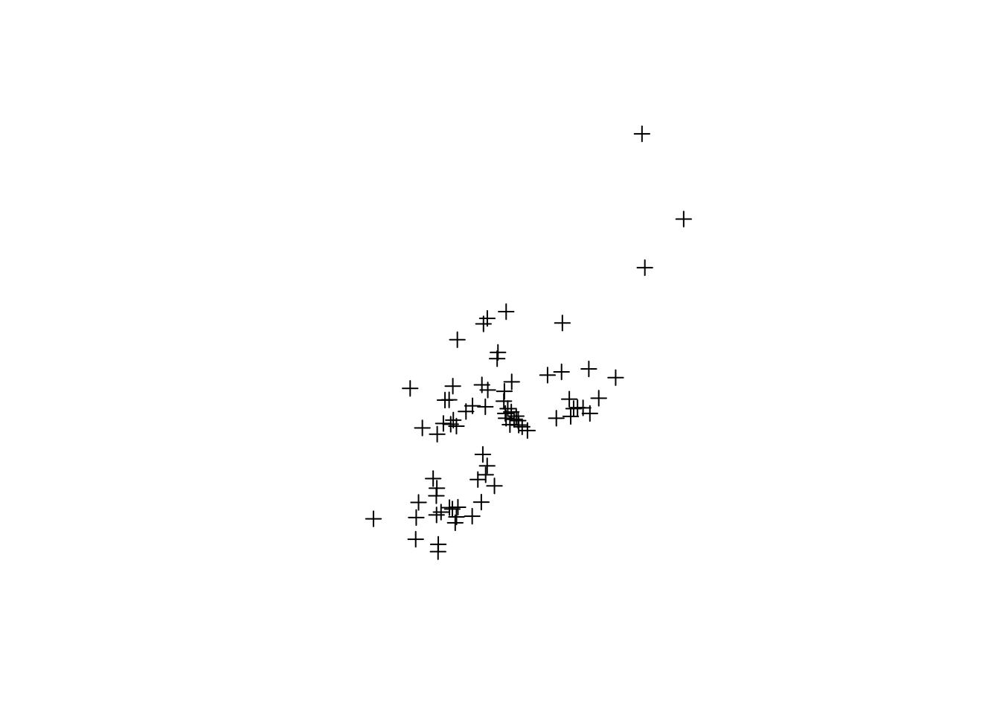

Linking to GEOS 3.10.2, GDAL 3.4.1, PROJ 8.2.1; sf_use_s2() is TRUE
library(sp)
The legacy packages maptools, rgdal, and rgeos, underpinning the sp package,
which was just loaded, will retire in October 2023.
Please refer to R-spatial evolution reports for details, especially
https://r-spatial.org/r/2023/05/15/evolution4.html.
It may be desirable to make the sf package available;
package maintainers should consider adding sf to Suggests:.
The sp package is now running under evolution status 2
(status 2 uses the sf package in place of rgdal)
# Abra o arquivo 'gm10.shp'tvpaga.shp <-st_read("data/tvpaga4.shp", options ="ENCODING=WINDOWS-1252")
options: ENCODING=WINDOWS-1252
Reading layer `tvpaga4' from data source
`/home/raphael/projects/ecoespacial/data/tvpaga4.shp' using driver `ESRI Shapefile'
Simple feature collection with 74 features and 41 fields
Geometry type: POINT
Dimension: XY
Bounding box: xmin: -56.69285 ymin: -32.06813 xmax: -35.70185 ymax: -3.783775
CRS: NA
tvpaga.shp <-st_make_valid(tvpaga.shp)tvpaga.shp <-as_Spatial(tvpaga.shp)# Plotar o mapaplot(tvpaga.shp)

B Importar matriz criada no Geoda
Matrizes criadas no Geoda através de polígonos de Voronoi.
library(spdep)
Loading required package: spData
To access larger datasets in this package, install the spDataLarge
package with: `install.packages('spDataLarge',
repos='https://nowosad.github.io/drat/', type='source')`
Neighbour list object:
Number of regions: 74
Number of nonzero links: 404
Percentage nonzero weights: 7.377648
Average number of links: 5.459459
Link number distribution:
2 3 4 5 6 7 8 9
1 3 17 18 18 10 6 1
1 least connected region:
73 with 2 links
1 most connected region:
33 with 9 links
summary(rook_nb)
Neighbour list object:
Number of regions: 74
Number of nonzero links: 404
Percentage nonzero weights: 7.377648
Average number of links: 5.459459
Link number distribution:
2 3 4 5 6 7 8 9
1 3 17 18 18 10 6 1
1 least connected region:
73 with 2 links
1 most connected region:
33 with 9 links
Moran I test under randomisation
data: tvpaga.shp@data$GIN
weights: queen_w
Moran I statistic standard deviate = 0.59822, p-value = 0.2748
alternative hypothesis: greater
sample estimates:
Moran I statistic Expectation Variance
-1.141553e-02 -1.369863e-02 1.456567e-05
Moran I test under randomisation
data: tvpaga.shp@data$GIN
weights: rook_w
Moran I statistic standard deviate = 0.59822, p-value = 0.2748
alternative hypothesis: greater
sample estimates:
Moran I statistic Expectation Variance
-1.141553e-02 -1.369863e-02 1.456567e-05
Moran I test under randomisation
data: tvpaga.shp@data$GIN
weights: queen_w
Moran I statistic standard deviate = 0.59822, p-value = 0.2748
alternative hypothesis: greater
sample estimates:
Moran I statistic Expectation Variance
-1.141553e-02 -1.369863e-02 1.456567e-05
moran.test(x = tvpaga.shp@data$GIN, listw = w1)
Moran I test under randomisation
data: tvpaga.shp@data$GIN
weights: w1
Moran I statistic standard deviate = 0.61642, p-value = 0.2688
alternative hypothesis: greater
sample estimates:
Moran I statistic Expectation Variance
-1.141553e-02 -1.369863e-02 1.371827e-05